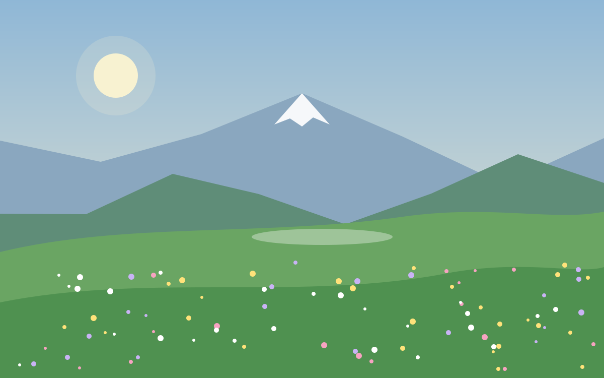
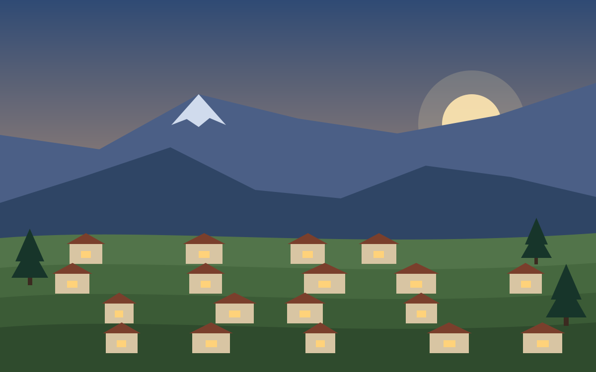
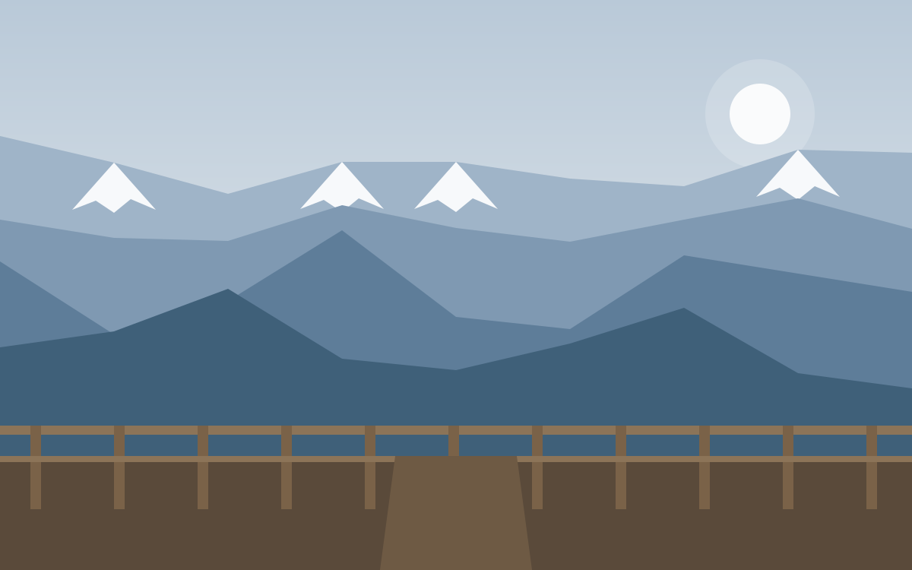

Valley
Neelum Valley
A scenic corridor of rivers, forests and villages.
Travel guidance – Neelum ValleyDiscover Kashmir
Discover remarkable valleys, lakes, villages and historical places.
Browse the main attractions. These are informational cards, not live bookings or route advisories.
A scenic corridor of rivers, forests and villages.
Travel guidance – Neelum Valley
High-altitude meadows and mountain viewpoints; access is seasonal.
Travel guidance – Baboon Valley
Alpine scenery and mountain routes; check local access before travel.
Travel guidance – Ratti Gali Lake



Only visit officially permitted areas; restrictions may change.
Travel guidance – LOC ViewpointsPlanning note: Check every route and access restriction with official local sources before you travel.